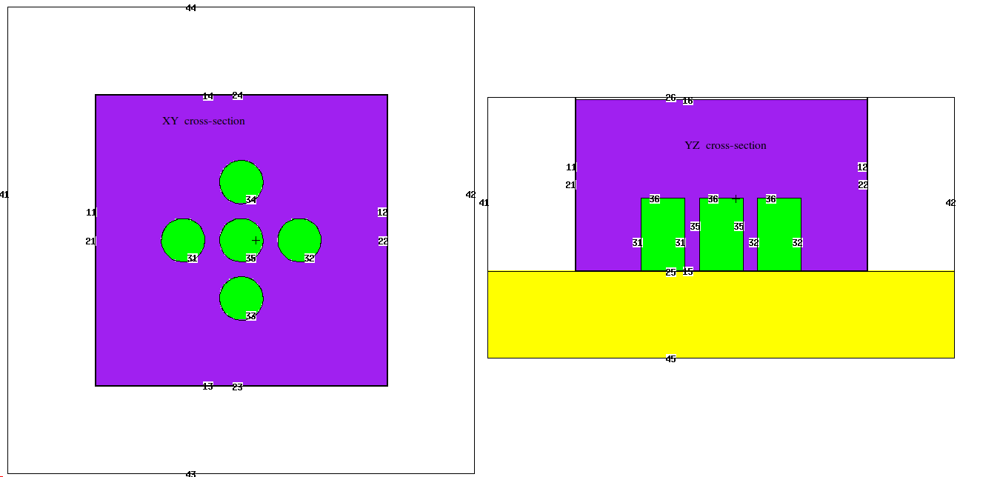

Other projects
Here lies projects or area of interest to me, which aren't easy to visualize, or takes too much effort to do so for the given amount of impact.
Here lies projects or area of interest to me, which aren't easy to visualize, or takes too much effort to do so for the given amount of impact.
Monte Carlo N-Particle transport modelling
MCNP is a software used for modelling the distribution and energy deposited by neutrons, photos (gamma-rays) and electrons (beta particles) from a radioactive source onto its surroundings. It is a commonly used code in the nuclear industry. It formed an essential part of the PTNR training.
The top and side view of the containers modelled in assignment question 3. The purple volume denotes water and the green volumes denotes Uranium. These are screenshots of the built-in model viewers provided by MCNP6. As you can see, aesthetics was not a primary concern for the creators of MCNP.
FORTRAN77 assignment for MSc PTNR
A calculator for the temperature profile of water passing through the reactor was made. An accompanying report was produced along with the code, both of which can be viewed on the relevant GitHub repository. The grade is noted in the README file.
Computational nuclear materials modelling using GULP: General Utility Lattice Program
I have an interest in materials modelling due to my background in BSc Nuclear Science and Materials. Therefore I was delighted to try out the GULP materials modelling code as part of the PTNR's optional Computational Nuclear Materials Modelling course.
Nuclear Lab data analysis R
In the field that I'm working in (Nuclear physics/materials), R is a language that is rarely used, and therefore I have less practice with it.
I am proficient with training and using feedforward neural networks and other supervised and unsupervised techniques for machine learning. My MSc thesis focused on applying neural networks in fusion neutron spectra unfolding.
C++ assignments
Some C++ projects were completed in my first and second year of the BSc degree.
Theoretical understanding and hands-on experience
The BSc and MSc degrees gave me a lot of opportunities to learn about and use radiation detectors, including HPGe, NaI, CsI, BF3, 3He, coincidence timing detector, etc., in the nuclear laboratory as well as the class. The auxiliary electronics were also taught in detail. Therefore I am reasonably familiar with their operations.
Mathematical skills leveraging the computational power of a modern processor
Power is nothing without control
As stated in my about me page, I am a strong advocate for thinking before doing, rather than blindly throwing computational power at a problem to solve it by brute force.
This is what the tricks inside the book numerical recipes are helpful for. These tricks include better ways of performing integration, differentiation, and solving ODE's.
Another important skill that I think is beneficial for all scientists is automatic differentiation.
Inverse problems, iterative algorithms, optimization problems, matrix differentiation, Lagrangian multipliers, uncertainty propagation
These are some areas which I can confidently say that I have some knowledge about due to my work in the neutron spectrum unfolding PhD, and are therefore confident at applying these skills onto physics problems.
However, I am always looking to expand on this list, and I am by no means restricted to these topics only.
Graph theory, chaos theory, and control theory are also areas which I find either both useful and beautifully awe-striking, but I can't say that I have a firm grasp on all of them yet.